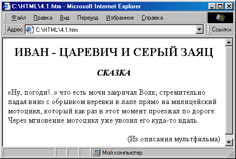
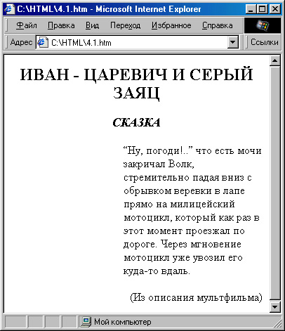
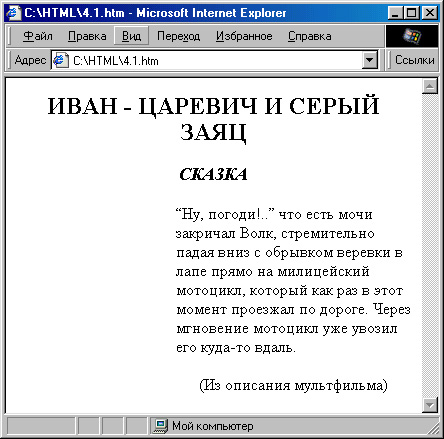

|
|
|
4. Оформление веб-страницы с использованием стилей
4.1. Оформление с помощью атрибута STYLE
В предыдущих главах мы рассмотрели некоторые способы создания веб- страниц, однако до сих пор почти ничего не говорили о том, как оформляют текст. И это не случайно. Дело в том, что в спецификации HTML 4.0 было рекомендовано использовать для оформления страниц новое мощное сред ство — каскадные таблицы стилей (CSS), которые мы сейчас и рассмот рим. При этом многие теги и атрибуты (собственно говоря, почти все, относящиеся к оформлению) были отменены, в том числе и некого рые из тех, что были рассмотрены нами ранее.
— Стоп! — скажете вы. — А для чего же мы их тогда рассматривали?
Не волнуйтесь, во-первых, мы почти не рассматривали отмененные теги, за исключением наиболее часто встречающихся, а во-вторых, отмена тегов в HTML 4.0 вовсе не означает, что всем нужно немедленно прекратить их использование. В некоторых случаях все равно бывает удобнее восполь зоваться одним из этих тегов, и этого не нужно бояться. Отмененные теги все еще поддерживаются текущими версиями броузеров, по крайней мере для совместимости со старыми веб-страницами. Скорее всего, они будут поддерживаться еще очень долго (как, например, до сих пор поддержива ются теги <ХМР> и <BL>, хотя первый из них не используется со времен HTML+, а второй вовсе никогда не входил в его спецификацию). Да и вообще, было бы странно, если бы новая версия какого-либо броузера вдруг “отказалась” от некоторых тегов — это явно не прибавило бы ей популяр ности. Так вот, отмена тегов означает, что WWW-консорциум не реко мендует более ими пользоваться, поскольку CSS действительно намного удобнее, и возможности автора при этом гораздо шире.
Атрибут STYLE
Итак, давайте начнем изучение оформления веб-страниц с использованием каскадных таблиц стилей CSS. И для начала рассмотрим такое понятие, как атрибут STYLE=.
Самый примитивный способ использования CSS — это ввести в код HTML атрибут STYLE= с соответствующим значением. Его можно добавить практически ко всем тегам (кроме таких, как, например, <HEAD> и <HTML> ). Таким образом, вместо отмененных атрибутов в HTML 4.0 всегда следует применять атрибут STYLE=.
Давайте рассмотрим пример. Возьмем для начала веб-страничку из вто рой главы (“Домашняя страница Сергея Сергеева”, см. рис.2.8), в кото рой немного использовались отмененные теги и атрибуты, и попробуем “переписать” ее по всем правилам HTML 4.0, сохранив пока что старое оформление.
Во-первых, вместо
<BODY BGCOLOR="#BABAAO" TEXT="#1D1D18" LINK="#634438" VLINK="#634438" ALINK="Black">
рдует написать так:
Кстати, возможен и более простой вариант:
<Н1 ALIGN="centerг">Домашняя страница Сергея Сергеева</Н1>
Вместо этого применим атрибут STYLE= взамен отмененного атрибута ALIGN= и напишем:
<Н1 STYLE="text-align: center;">Домашняя страница Сергея Сергеева</Н1>
Этому атрибуту соответствует свойство text-align, принимающее те же зна чения, что и атрибут ALIGN=. Точно так же выровняем следующий тег <DIV>.
Замена тегов на стилевое описание
В следующем блоке использован отмененный тег <FONT>:
<FONT SIZE="+1"><В>Сергей Сергеев</В> - писатель-авангардист, автор 20 рассказов.<BR>
В жизни большой любитель собак и компьютерных игр.<BR><BR>
Некоторые его рассказы вы можете прочитать прямо здесь.<BR> </FONT>
Вы можете спросить, что если атрибут STYLE= легко заменил отмененные атрибуты, то что делать с отмененными тегами? К чему “прикрепить” атри бут STYLE=? В большинстве случаев его можно “прикрепить” к тегу <DIV>. В данном случае мы так и поступим:
<DIV STYLE="font-size: larger;">
Как видите, значения свойства font-size отличаются от значений атрибута SIZE= тега < FONT> . Для относительного увеличения размера шрифта исполь зуется значение larger, для относительного уменьшения— smaller. Кроме того, можно, во первых, указывать процентное изменение величины шрифта, например font-size: 120%;, либо его абсолютную величину. Для этого можно использовать либо значения xx-small, x-small, small, medium, large, x-large и xx-large, либо просто указать величину шрифта в пикселах — font-size: 18px; или в других единицах.
Кроме того, в нашем блоке присутствует тег <В> , также относящийся к оформлению, хотя почему-то и не отмененный в HTML 4.0. В CSS ему соответствует свойство font-weight: bold;. Однако мы не можем написать вместо
<В>Сергей Сергеев</В> следующее:
<DIV STYLE="font-weight: bold;">Сергей CepreeB</DIV>
поскольку в этом случае следующий текст будет перенесен на новую строку. Поэтому вместо тега <DIV> здесь следует использовать тег <SPAN> :
<SPAN STYLE="font-weight: bold;">Сергей Сергеев</SPAN>
Этот тег, кстати, бессмысленно применять без атрибутов, поскольку тогда вообще не будет никакого эффекта. Как правило, он применяется именно с атрибутом STYLE= (либо с атрибутами CLASS=, ID=, LANG= или обработчиками событий, о которых речь пойдет ниже).
Свойство font-weight (“жирность” шрифта), кстати, может принимать не только значения bold (полужирный) и normal (обычный), но и любое числовое значение от 100 до 900 (правда, имеют смысл только значения, кратные 100) — то есть, от самого тонкого до самого жирного шрифта. При этом значение 400 — это то же самое, что normal, a 700 — то же, что bold. Можно также употреблять относительные значения bolder и lighter.
Пойдем далее. После этого текстового блока у нас на веб-странице была горизонтальная линия <HR > с отмененным атрибутом W1DTH=, вместо которого следует использовать стилевое свойство width:
<HR STYLE="width: 75%;">
Кроме того, если помните, для организации вертикального отступа между текстом и горизонтальной чертой мы использовали не очень красивую конструкцию <BR> . В CSS имеется свойство margin, с помощью кото рого можно регулировать отступы (“поля”) со всех сторон элемента; а для индивидуальной регулировки отступов с каждой стороны можно исполь зовать свойства margin-top (отступ сверху), margin-bottom (отступ снизу), margin- left (отступ слева) и margin-right (отступ справа). Поскольку мы намеревались удалить горизонтальную черту от текста на расстояние, примерно равное одной строке, давайте напишем так:
<HR STYLE="margin-top: 24px; width: 75%;">
Интервал, определенный свойством margin-top, составляет 24 пиксела.
Далее центрируем заголовки рассказов с помощью уже знакомого нам свойства text-align. Но у нас есть еще подзаголовки, выделенные курсивом:
<I>сказка</I>
Поскольку тег <I> тоже относится к оформлению (хоть и не отменен), заме ним его стилевым свойством font-style: italic;, применив уже знакомый тег <SPAN>:
<SPAN STYLE="font-style: italic;">сказка</SPAN>
Кроме значений normal (обычный) и italic (курсив) это свойство может при нимать значение oblique (наклонный шрифт). Различие между наклонным шрифтом и курсивом состоит в том, что буквы курсива имеют иное начер тание. Правда, при использовании определенных шрифтов большинство броузеров пока что “халтурят” — используют курсив, если нет готового варианта наклонного шрифта.
Стилевое позиционирование
Теперь исправим конструкцию для эпиграфа:
<Р ALIGN="right"XFONT SIZE="-l">Hy, погоди!.. <BR>
<I>(Из мультфильма )</I>
</FONT></P>
Вместо атрибута ALIGN=, а также тегов <FONT> и <I> применим уже знакомые конструкции:
<Р STYLE="text-align: right; font-size: smaller; ">Hy, погоди!.. <BR><SPAN STYLE="font-style: italic; "> (Из мультфильма) </SPAN></P>
Кстати говоря, на самом деле и эта конструкция, и та, что была в старом варианте, не совсем подходит для эпиграфа. Удачно, что эпиграф у нас короткий. А что бы было, если он был бы немного длиннее, например таким:
<Р STYLE="text-align: right; font-size: smaller;">«Ну, погоди!..» — что есть мочи закричал Волк, стремительно падая вниз с обрывком веревки в лапе прямо на милицейский мотоцикл, который как раз в этот момент проезжал по дороге. Через мгновение мотоцикл уже увозил его куда-то вдаль.<BR><SPAN STYLE="font-style: italic;">(Из описания мультфильма) </SPAN></P>
Результат показан на рис. 4.1. Согласитесь, что это больше похоже не на эпиграф, а на какой-то вводный текст, потому что эпиграф должен оста ваться в правой части экрана. В старом варианте веб-страницы с этой про блемой было бы трудно справиться (пришлось бы либо рисовать невидимую таблицу, либо вручную разбивать текст эпиграфа тегами <BR> , что привело бы к различным результатам при просмотре в окнах разного размера). А при использовании CSS можно просто использовать такие свойства блока, как width и height (ширина и высота). Второе из них нам сейчас не нужно, а вот свойство width как раз пригодится:
<DIV STYLE="text-align: right;"> <P STYLE="text-align: justify; font-size: smaller; width: 35%;">
«Hy, погоди!..» — что есть мочи закричал Волк, стремительно падая вниз с обрывком веревки в лапе прямо на милицейский мотоцикл, который как раз в этот момент проезжал по дороге. Через мгновение мотоцикл уже увозил его куда-то вдаль.<BR>
<SPAN STYLE="font-style: italic;">(Из описания мультфильма)</SPAN>
</DIV>
Результат показан на рис. 4.2. Давайте с ним разберемся. Как видно из вышеприведенного кода, просто добавить свойство width: 35%; недоста точно. Действительно, тогда текст блока был бы выровнен по правому краю, но это выравнивание происходило бы внутри блока, а сам блок шириной 35% от полной ширины окна располагался бы слева. Поэтому весь блок, описанный тегом <Р> , пришлось заключить во внешний блок <DIV> , а уже в нем установить выравнивание по правому краю (text-align:right;). Ну, а раз уж выравнивание по правому краю взял на себя внешний блок, внутри текстового блока для лучшего восприятия мы выровняли текст но обоим краям (text-align: justify;).

Рис. 4.1. Длинный эпиграф при таком, оформлении становится не похожим, на эпиграф

Рис. 4.2. Выравнивание эпиграфа с помощью вложенных блоков
Все бы хорошо, однако подпись под эпиграфом хорошо бы выровнять по правому краю (хотя, поскольку она занимает почти всю строку, это не очень заметно), как на рис. 4.3. Но поскольку тег <SPAN> “не понимает” отдельного выравнивания, придется эту подпись также заключить в блок <DIV> или <Р>.

Рис. 4.3. Выравнивание подписи под эпиграфом
милицейский мотоцикл, который как раз в этот момент проезжал по дороге. Через мгновение мотоцикл уже увозил его куда-то вдаль.
</Р>
<Р STYLE="text-align: right; font-size: smaller; width: 35%; font-style: italic; position: relative; top:-18px;">
(Из описания мультфильма) </Р> </DIV>
Конечно, последняя конструкция выглядит несколько искусственной — собственно говоря, использованный здесь метод в данном случае напоминает известное выражение “Из пушки по воробьям”. Зато мы на этом примере сможем познакомиться с позиционированием объектов.
Обратите внимание на свойство position. Оно задает тип позиционирования — относительный или абсолютный. В данном случае определено относительное позиционирование (relative), то есть отсчет ведется от той позиции, которую должен был бы занимать этот элемент, если бы позиционирование не было задано. А абсолютное (absolute) позиционирование означает, что отсчет ведется от верхнего левого угла окна броузера (точнее, его рабочей области). Еще у этого свойства может быть значение static, означающее, что элемент не позиционируется индивидуально, и значение fixed (фиксированная позиция — элемент позиционируется абсолютно и не прокручивается вместе с остальным содержимым страницы), которое, однако, поддерживается пока только шестой версией Netscape.
Со свойством position тесно связаны еще два свойства — top и left, которые задают позицию верхнего левого угла элемента соответственно по верти кали и горизонтали. Чем больше значение top, тем ниже расположен эле мент, и, соответственно, чем больше значение left, тем элемент правее. В данном случае, для того чтобы приподнять текст примерно на высоту одной строки, нам пришлось написать: top: -18px;.
Ну, ладно, мы ведь договаривались пока что не менять ничего на страничке, поэтому вернемся к нашему короткому тексту, однако все равно приме ним к нему вышеуказанную конструкцию (со вложенными блоками <DlV>). Между прочим, даже с коротким текстом это все равно получается краси вее, чем раньше. Только заменим значение width на 130 точек (вместо процентного обозначения), а то при очень большом разрешении экрана короткий текст слишком сильно оторвется от подписи.
Абзацный отступ
Далее, в основном тексте рассказов у нас были абзацные отступы, сделанные с помощью серии неразрывных пробелов ( ) — способ не самый изящный. С помощью стилевого свойства text-indent можно определить абзацный отступ в любых единицах. Правда, придется отказаться от деления на абзацы с помощью тега <BR>, поскольку он “не поймет” указаний сделать отступ. Можно делить текст на абзацы “официальным” способом — <Р> , однако, чтобы избежать пропуска строки, мы воспользуемся тегом <DIV> :
<DIV STYLE="text-align: justify; text-indent: 2em;">
Здесь мы определили абзацный отступ, равный двум символам максимальной ширины в данном шрифте.
После текста рассказа все повторяется — та же горизонтальная линия, для которой мы укажем отступ сверху, опять заголовок, эпиграф и текст. Посмотрим, что получается в целом:
<!DOCTYPE HTML PUBLIC "-//W3C//DTD HTML 4.0 Transitional//EN">
<HTML>
<HEAD>
<ТIТLЕ>Домашняя страница Сергея Сергеева.</TITLE>
</HEAD>
<BODY STYLE="background-color: #BABAAO; color: rgb(29,29,24);" LINK="#634438" VLINK="#634438" ALINK="Black" >
<H1 STYLE="text-align: center;">Домашняя страница Сергея Сергеева</Н1>
<DIV STYLE="text-align: center;">
<A HREF="#skazka">CKА3KА «Иван-царевич и серый зaяц»</A>
<A HREF="#rasskaz">PАССKА3 «МОЛОТОК»</A>
</DIV>
<BR>
<DIV STYLE="font-size: larger;">
<SPAN STYLE="font-weight: bold;,>Сергей Сергеев</SPAN> — писатель-авангардист, автор 20 рассказов.<BR>
В жизни большой любитель собак и компьютерных игр.<ВR><ВR>
Некоторые его рассказы вы можете прочитать прямо здесь. </DIV>
<HR STYLE="margin-top: 24px; width: 75%;">
<Н2 STYLE="text-align: center;"XA NAME="skazka">ИBAH-ЦAPEBИЧ И СЕРЫЙ ЗАЯЦ</А><ВR>
<SPAN STYLE="font-style: italic; ">CKА3KА</SPAN></H2> <DIV STYLE”"text-align: right;">
<DIV STYLE="text-align: justify; font-size: smaller; width: 130;">
Ну, погоди!..
<DIV STYLE="font-style: italic; text-align: right;">(Из мультфильма)</DIV>
</DIV> </DIV>
<BR>
<DIV STYLE="text-align: justify; text-indent: 2ет;">Жил да был Иван-Царевич, и все у него было: и злато-серебро, и невест полный дворец, и книжек много умных, и тренажерный зал огромный. Однако тоскливо было у него на душе - как встанет утром с постели царской, так и начнет горевать, и горюет до вечера. </DIV>
<DIV STYLE="text-align: justify; text-indent: 2em;"> Долго ли, коротко ли, ...</DIV>
<DIV STYLE="text-align: justify; text-indent: 2em;"> ...И они жили долго и счастливо и умерли в один день.</DIV>
<HR STYLE="margin-top: 24px; width: 75%;">
<Н2 STYLE="text-align: center;"><A NAME="rasskaz">МОЛОТОК</A> <BR>
<SPAN STYLE="font-style: italic; ">paccкaз</SPAN>
</H2> <DIV STYLE="text-align: right;">
<DIV STYLE="text-align: justify; font-size: smaller; width: 130;">
Мы кузнецы, и дух наш молод.
<DIV STYLE="font-style: italic; text-align: right;">(Из песни) </DIV>
</DIV>
</DIV>
<BR>
<DIV STYLE="text-align: justify; text-indent: 2ет;">Это случилось очень давно, уж и не помню в каком году, в каком веке и в каком тысячелетии... (Здесь располагается текст рассказа) </DIV>
</BODY>
</HTML>
Результат показан на рис. 4.4. Вы можете заметить, что он практически не отличим от веб-страницы, представленной на рис. 2.8, если не считать немного “исправленных” эпиграфов и абзацных отступов.
Таким образом, мы переписали страничку в соответствии с требованиями HTML 4.0, а попутно рассмотрели еще некоторые дополнительные воз можности, предоставляемые CSS.
|
|
|